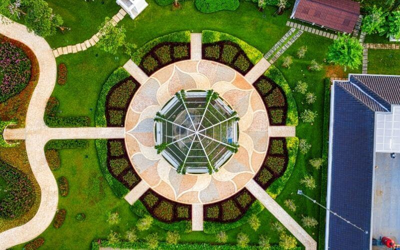

Landscaping Tips & Ideas
You can create your own landscaping design.
It can be difficult to create your own landscaping plan. Many people will need help with landscaping. It is not hard to find a landscaping design to suit your needs. There will be hundreds of sites that offer great landscaping ideas.
There are a few places where you can find great landscaping ideas. شركة تنسيق حدائق The number one place is probably the web. The best landscaping ideas will be found in the back and front of your property. Check out the drainage and look at the levels and slopes of your property. It is easier to notice things the more you do it. It is not easy to decide on a landscaping design and then find out that the project cannot be completed due to an aspect of your home. This is why it's important to research every landscaping option you're thinking of using.
Make sure to take the time to understand the basics of landscaping before you make your final decision on which landscaping idea to choose. This is especially important if this is your first time doing such work. A book or two from the library might be helpful if you're just starting to learn about landscaping. A good book on landscaping can help you gain a lot of knowledge. These books are free and you can still benefit from all they have.
A landscaping plan that incorporates both your front and back yards is a good idea if you're looking to make changes to your landscaping. The best landscaping design will be one that combines your front and back yards. In my many years as a landscaper, however, I have learned that not all landscaping tips are the same. There is no one right way to do it.

Tips for Landscaping
Everybody can learn a lot about landscaping by making your yard look amazing at any time of year. Midwinter is a difficult time for many plants, as they are not so attractive. This is why it is crucial to know what types of trees and plants may still bring beauty and beauty to your home during the winter heat and the depths of winter.
It will take some effort to locate the plants that will make this landscaping tip successful. تنسيق حدائق You will need to determine which plants are able to thrive in your climate throughout the year. While some plants may do better in particular months, you should always have something to look at in your yard. You can find the best places to get landscaping tips from your local garden centre. If that fails, you can always visit the library to pick up books about local flowers and trees.
Layering your planting areas is another good landscaping tip. These beds can turn out to be very useful when you choose the right plants for your yard. This can bring harmony to your entire yard. You can make this tip work at its best by using repetition. This will make your yard look better for those who pass it.